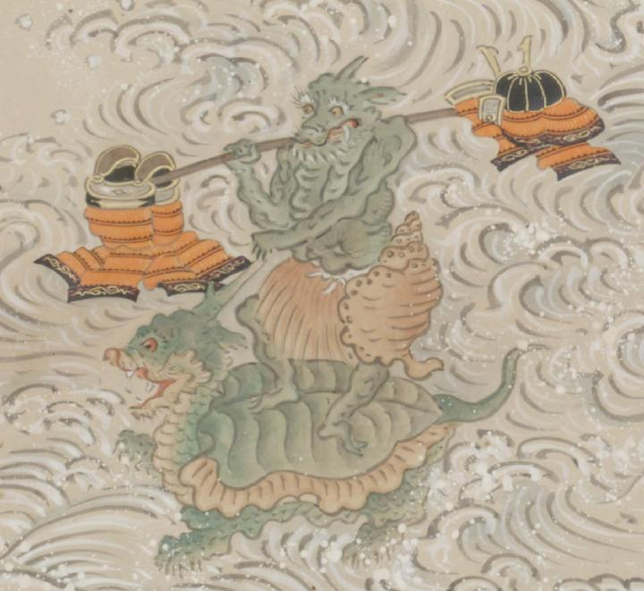

龍頭で緑色の亀に乗る龍頭で緑色の化物。龍王の眷属。腰蓑と巻貝を腰につけ、鎧と兜を天秤棒で右肩に担いでいる。
著作者：英一蝶／出典：親書誌：U426_nichibunken_0094：田原藤太秀郷；タワラトウタヒデサト／日付：2008／資源識別子：U426_nichibunken_0094_0008_0000
Copyright (c)2010- International Research Center for Japanese Studies, Kyoto, Japan. All rights reserved.